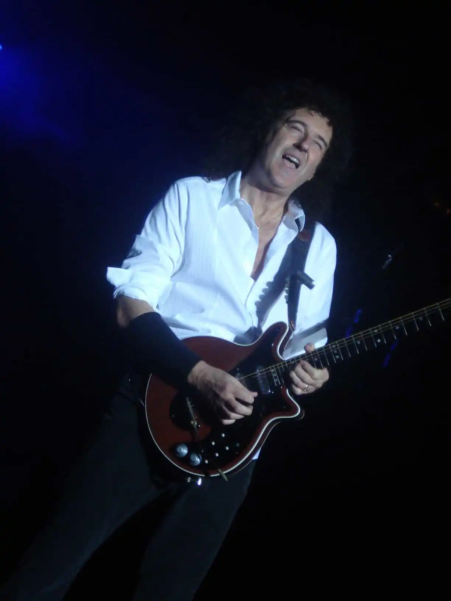

Brian Harold May
Instruments: Vocals, piano, guitar, keyboards
Active Band Memeber: 1965–present
Born in Twickenham, England on July 19, 1947
Brian May
With a musical career spanning four decades, Queen founding member Brian May is a world-renowned guitarist and songwriter, with production and performance credits on recordings which have sold in excess of 100 million copies worldwide.
Brian has penned 22 worldwide hits for Queen; among them the anthems We Will Rock You, The Show Must Go On and I Want It All, and powerful ballads including Who Wants to Live Forever, No-One But You (Only the Good Die Young) and Save Me. As a successful and respected solo artist, Brian’s recordings include the albums Back to the Light (1992), featuring Too Much Love Will Kill You and Driven By You, both Ivor Novello Award-winners, and 1998’s Another World. His songs continue to influence new generations of performers and have inspired recordings by artists as diverse as Elton John, Def Leppard, the Royal Philharmonic Orchestra, Shirley Bassey and Eminem. Brian has enjoyed collaborations with numerous artists including Robbie Williams, the Foo Fighters, Cliff Richard, Guns ‘n’ Roses, Diana Ross and Luciano Pavarotti. He was also proud to play feature guitar on the Winter Olympics 2002 opening music, The Fire Within for his friend and composer, the late Michael Kamen.
Perhaps the most memorable display of Brian’s unique style and musicianship was his performance of his own arrangement of God Save the Queen, live from the roof of Buckingham Palace, to open HM The Queen’s 2002 Golden Jubilee celebrations in front of an audience of more than 200 million people around the world.
An interest in film scoring developed when Queen became the first rock group to score a major film, Flash Gordon, featuring the hit Flash! penned by Brian. This was followed by definitive music for Highlander. Brian later contributed a mini-opera for Steve Baron’s 1996 Pinocchio, and composed a complete film soundtrack for the 1999 French art film Furia.
May is, of course, no stranger to the theatrical world, frequently contributing to the live performance work of his wife Anita Dobson, but in 1987, entering this world in his own right, he wrote and performed the music for the London Riverside Studios production of Macbeth. He returned at full strength to the Theatre in 2002, as one of the principal creative forces behind the groundbreaking ‘rock theatrical’, We Will Rock You, which became phenomenally successful, and was one of London’s top-selling shows running for 12 years with nightly standing ovations at the Dominion Theatre, London, it was easily the longest- running show ever to play at the theatre. Although We Will Rock You is now a global enterprise, Brian remains personally involved in developing new productions and updating those currently playing.
On Freddie’s death, the surviving members of Queen set up a charity to support AIDS relief, the Mercury Phoenix Trust. The MPT has to date channelled more than $16 million to over 800 AIDS projects around the world. An ongoing commitment to AIDS awareness led Queen to become a driving force in the 46664 campaign for the Nelson Mandela Foundation. The first of a series of 46664 concerts, held in Cape Town in November 2003, was broadcast worldwide via TV, Internet and radio, becoming the most widely distributed media event in history, with an audience of over 2 billion in 166 countries. Brian continues in his role as an ambassador and participant in the 46664 international concert series aimed at promoting AIDS awareness worldwide.
Queen’s musical catalogue consistently tops popularity polls, and their achievements have been recognised with numerous prestigious awards, including being honoured with a star on the Hollywood Walk of Fame (October 2002), being inducted into both the USA Rock and Roll Hall of Fame (March 2001) and the Songwriters Hall of Fame (June 2003), and being among the first inductees into the UK Music Hall of Fame (November 2004), which was the first event at which Paul Rodgers joined Brian and Roger as vocalist. A successful world tour together followed in 2005/06, and Paul, Brian and Roger (Taylor) then went into the studio to create new material for the well-received Queen/Paul Rodgers album The Cosmos Rocks, followed by a second giant world tour.
In July 2005, Guinness World Records announced that Queen had overtaken the Beatles to become the most successful albums act in UK chart history.